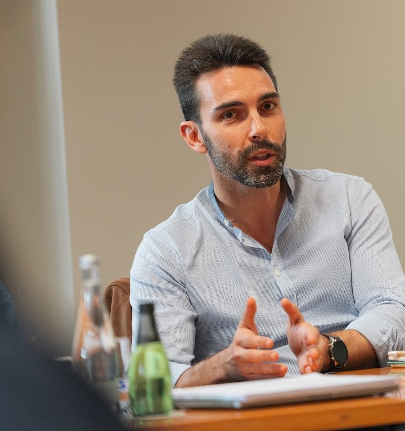

Tudo acaba em cima da sua secretária?A sua organização não pode depender só de si.
Não há ninguém entre si e a equipa? Há chefias que executam e tratam da operação, mas não lideram? As decisões vão todas parar a si e não sobra tempo para planear? É aí que entro: pessoas, processos e números a puxar para o mesmo lado.
45 minutos, gratuita e sem compromisso.
Quando falta quem dirija
Não há ninguém entre quem lidera e a equipa? A organização não tem dimensão para um diretor-geral a tempo inteiro, ou não justifica esse investimento? Assumo a direção a tempo parcial: o rigor de uma gestão profissional, a um preço proporcional à sua dimensão.
Ver a direção a tempo parcialQuando há estrutura, mas falta liderança
As chefias tratam bem da operação, mas a liderança fica por fazer? Quem decide sente falta de ferramentas para gerir pessoas, tempo e prioridades? Desenvolvimento de lideranças e coaching executivo, até a estrutura de liderança puxar para o mesmo lado.
Ver o coaching executivoReconhece alguma destas situações?
Raramente aparecem sozinhas e quase sempre têm a mesma origem:
a organização cresceu e a forma de gerir e de liderar não acompanhou.
«Não consigo tirar o melhor da minha equipa.»
Tem pessoas capazes, mas o resultado fica aquém? Ninguém assume responsabilidades além de si? As chefias executam, mas não lideram?
Ver o coaching executivo«Tenho dados, mas não me ajudam a decidir.»
Há números, relatórios e mapas, mas chegam tarde, soltos ou por trabalhar? Na hora de decidir, falta saber ao certo quanto custa, quanto sobra e onde está a perder?
Ver a direção a tempo parcial«Passo o dia a apagar fogos.»
Tudo chega a si? Não há tempo para planear, os planos que existem não se cumprem e o importante fica sempre para depois?
Ver a direção a tempo parcial«Crescemos, mas a qualidade baixou.»
Mais trabalho, mais pessoas, mais erros? O que funcionava com poucas pessoas já não funciona com muitas?
Ver a direção a tempo parcial«Faltam-me ferramentas para gerir pessoas e tempo.»
Sabe o que quer da equipa, mas não tem método para o pedir, acompanhar e corrigir? As tarefas multiplicam-se e o tempo não chega?
Ver o coaching executivo«Decido tudo sozinho.»
Não tem com quem conversar para tomar melhores decisões? Falta-lhe uma segunda opinião externa, independente e experiente?
Ver o coaching executivoO que contrata não é o meu tempo. É a minha experiência, o meu conhecimento e o resultado executado.
- 01
Diagnóstico
Olho para a organização inteira: pessoas e liderança, processos, números, e onde a tecnologia e a inteligência artificial podem poupar tempo. Converso com a liderança e com quem está no terreno.
- 02
Desafio por escrito
Definimos o que tem de mudar, os entregáveis, os prazos e o preço. Sabe à partida o que me cabe fazer e como se verifica.
- 03
Implementação
Trabalho ao lado da liderança e com a equipa até a transformação funcionar no dia a dia. Pode ser direção a tempo parcial, um programa para as chefias, coaching ou tudo junto: decide o diagnóstico, não um pacote.
- 04
Autonomia
Cada etapa termina com a equipa capaz de manter o que se construiu. Depois decidimos juntos qual é o passo seguinte.
Uso inteligência artificial em todo o trabalho, na análise, nos relatórios e na automatização do que é repetitivo. É isso que me permite entregar um resultado ao nível de um profissional a tempo inteiro, ou de uma equipa, a um preço que uma organização da sua dimensão consegue pagar.
Trabalho com um número restrito de organizações, e nunca com duas empresas concorrentes.
Só avanço com um projeto quando sei que posso fazer a diferença. Não acompanho ao mesmo tempo duas empresas do mesmo setor na mesma área geográfica. Exclusividade e confidencialidade são regras inegociáveis do meu trabalho.
É para si se:
- A gestão depende demasiado de si, haja ou não chefias entre si e a equipa.
- A sua organização ainda não tem uma direção profissional, ou tem chefias que precisam de aprender a liderar.
- Quer mudar e está disposto a fazer diferente: largar algumas decisões e entregar processos a outras pessoas, desde que fiquem em boas mãos.
- Quer resultados que se possam verificar, não relatórios elegantes que acabam na gaveta.
Não é para si se:
- Procura alguém disponível a qualquer hora para resolver o que é urgente.
- Quer alguém que execute sem questionar.
- Quer comprar horas de consultoria.
- Precisa apenas de cumprir obrigações fiscais e contabilísticas. Para isso, o seu contabilista é a pessoa certa.

Quem sou
Já estive no seu lugar.
Sou o Hugo Ávila Goulart, natural das Lajes do Pico. Durante doze anos fui Secretário-Geral e Diretor Financeiro da Santa Casa da Misericórdia das Lajes do Pico: tesouraria, orçamentos, obras, pessoas e um sistema de qualidade ISO 9001. Quando saí, fiquei mais ano e meio como consultor, a preparar a instituição para funcionar sem mim. Fui vereador na Câmara Municipal das Lajes do Pico, em regime de não permanência, eleito por um movimento independente. Como Diretor de Pessoas e Operações na AZx, criei programas de desenvolvimento de pessoas e a primeira estrutura de carreiras da empresa, e desenvolvi várias iniciativas de cultura, comportamento e liderança que marcaram a forma como a empresa trabalha. Quando decidi seguir com a minha empresa, a minha saída foi preparada ao longo de mais de seis meses, para que tudo ficasse a funcionar.
Sou empresário desde 2015, consultor de gestão, coach executivo certificado e formador. Fiz consultoria e coaching executivo com empresários de setores muito diferentes, da construção à distribuição alimentar, dos eventos ao turismo, consultoria a IPSS e projetos para entidades públicas da região. Hoje acompanho líderes, executivos, chefias e quadros superiores nos setores privado, público e social.
Domino duas linguagens que raramente andam juntas: a dos números e a das pessoas. E o que proponho, já o fiz no terreno.
Formação · Engenharia Informática (Universidade de Coimbra) · Pós-graduações em Gestão de Empresas (MBA) e em Gestão Autárquica e Modernização · MBA em Felicidade Organizacional · Coach executivo certificado (IBCI) · Analista comportamental DISC · Formador certificado · Auditor interno ISO 9001
O que dizem do meu trabalho
«O trabalho que temos desenvolvido tem sido fundamental para o nosso crescimento, abrindo novos horizontes e permitindo visualizar com clareza os patamares que queremos alcançar. As minhas expectativas foram totalmente superadas.»
Com quem já trabalhei: empresas de construção, distribuição alimentar e comércio grossista, logística, turismo, eventos e espetáculos, intermediação de crédito, consultoria e intermediação imobiliária, arquitetura, marketing e design. Misericórdias, autarquias e outras entidades públicas. Empresários, líderes e chefias a quem dei formação, em várias ilhas e no continente.
Também trabalho em formação, palestras e projetos de consultoria, em liderança, comunicação, gestão de tempo e produtividade, e pessoas e cultura.
Ver formação, palestras e projetos